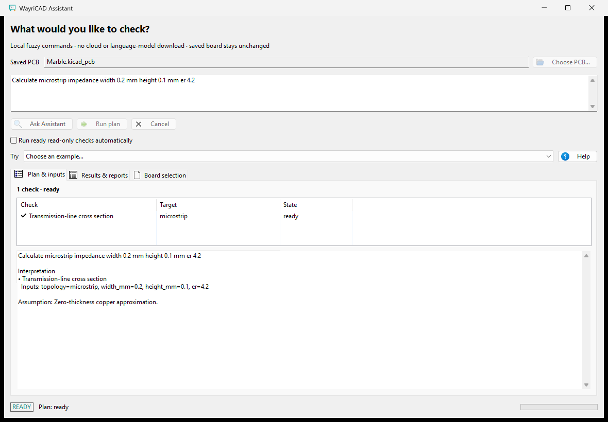
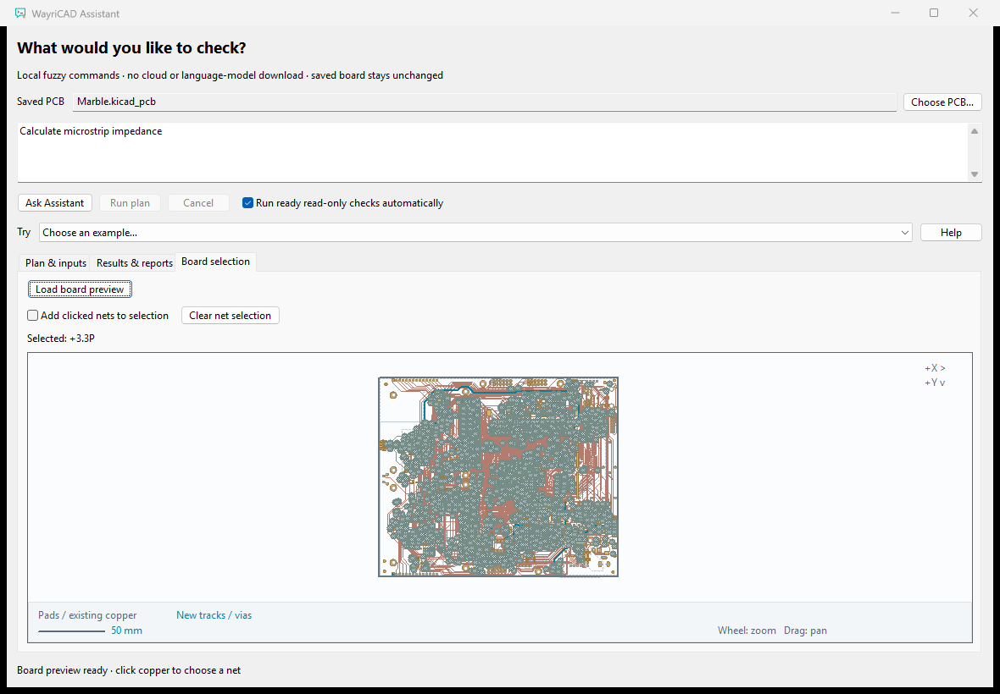
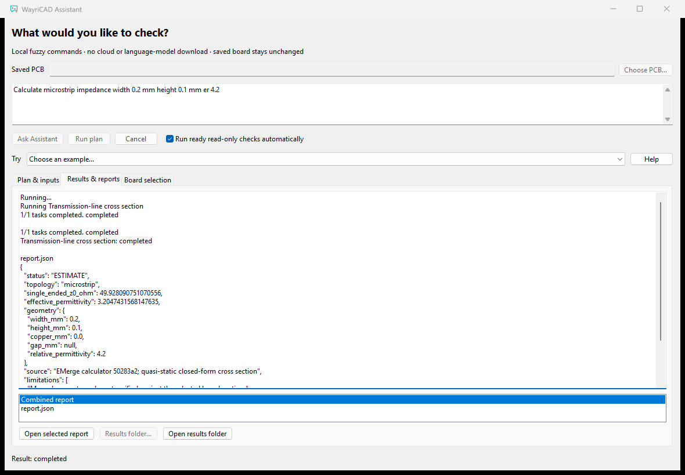

Use ordinary language to run supported WayriCAD checks. Choose Local commands or an optional Ollama model on your own computer. No cloud, automatic model downloads or layout edits are enabled.
http://127.0.0.1:11434; only loopback HTTP is allowed.AI interpretation is not engineering validation. Model inputs and prose can be wrong. Review units, unknowns, material properties, scope and model limitations. Every plugin in the CLI registry has registered actions, but this is not every GUI feature or autonomous Apply. The model cannot supply paths, arbitrary commands or switches. Enter required file inputs in the host clarification fields; apply design previews in their originating tool.
Only task text, selected net/reference names and action schemas are sent during planning. Interpretation sends numerical reports, which may include project metadata: use a trusted local service. Raw PCB bytes are not sent by the planner. Proxies and redirects are bypassed. No cloud endpoint, model download, service installation or automatic provider fallback is used. Missing Ollama leaves Local commands available. Select a model with at least 16,384 context tokens. Oversized evidence (96 KiB), malformed JSON, stale reports and unknown evidence IDs are rejected rather than silently truncated or accepted.
Use Cancel to interrupt a request. A service/model error is shown explicitly; start Ollama, choose an installed compatible model and retry. Changing the query, board selection or provider settings invalidates the old interpretation. Suggestions are not tool execution.
Correct a proposal: edit its values in Plan & inputs and click Use these inputs. Clear an optional value to omit it; unknown required values are requested again. Select an unwanted task and click Remove selected task. Editing disables Run until the correction is submitted. Small local models may invent defaults or add tasks: review all of them. No automatic execution means an interpretation mistake need not become a tool run.
python -m suite_assistant_plugin models python -m suite_assistant_plugin plan "Calculate microstrip impedance width 0.2 mm height 0.1 mm er 4.2" --provider ollama --model qwen3.5:4b --output C:/Projects/Example/plan.json python -m suite_assistant_plugin run C:/Projects/Example/plan.json --output-root C:/Projects/Example/results python -m suite_assistant_plugin explain C:/Projects/Example/results/run-folder/result.json --model qwen3.5:4b --output C:/Projects/Example/explanation.json
Replace the example model with one you installed. Review the saved plan before run. Explain reads a run record and its numerical artifacts without recomputing a simulation. See Ollama chat API and structured outputs.
Native icons identify actions and tabs. The plan table lists each check, its target and its current state. The status badge and pulsing activity gauge show when work is running; the pulse is not a numerical completion percentage. Results count completed tasks, unresolved tasks and generated files.

Results persist under Documents/WayriCAD/Assistant/results. Each run has its own folder and its plan, run record and artifacts remain after you close the window. Use Results folder… to choose a different destination for future runs and Open results folder to open the current run in your file manager. Boolean input fields offer true and false; those words are accepted by the planner.
Open Board selection and click Load board preview. This optional step avoids loading and drawing the full PCB during startup. Click a pad, via or trace to select its net. Only exact selected nets receive the accent highlight, including saved pad/via geometry and zone borders; unselected copper is dimmed. Zone borders are not rendered as invented filled copper. Use Add clicked nets to selection for multiple targets and Clear net selection to start again. Use Focus selected to fit matching saved items, Fit board to restore the full saved extent and Expand board for a larger viewport. Changing to another tab restores the query controls. The legend and net/item counts identify the highlighted data. Wheel to zoom, drag to pan and double-click to fit.
A selected net supplies context for a request that does not explicitly name a net. Selection changes invalidate the previous plan; ask again before running. The preview caches the saved board. Unsaved editor changes are not included; save, then choose the PCB again to refresh it.

Actual native screenshots: Windows, KiCad 10.0.6, public Marble saved PCB, source unchanged. This is a simplified copper/pad/outline selector. The first screenshot shows a request before execution. No private data or path redaction.
Show in PCB Editor explicitly selects the chosen nets in the originating editor. It is never triggered merely by hovering or changing the preview. The saved hash is checked and the complete selection is confirmed; stale files or missing originating-editor context produce an actionable error. Camera focus is reported as requested or unavailable, not guaranteed. Matching the saved file does not validate unsaved live geometry. No design objects are edited.
The navigation path was validated with native UI mocks and shared context/staleness/rollback tests. An installed live-toolbar session was not available during this check.
The planner asks for required nets, units and numerical inputs instead of inventing simulation settings. An ambiguous match is offered for user selection. Unsupported requests are reported without trying an unrelated command. Returned values retain the original tool’s limitations, material assumptions and boundary conditions.
Run python -m suite_assistant_plugin capabilities for the exact catalogue. To count fitted nominal values ask Give me the number of 10u capacitors with a saved project; or ask Give me layer wise total copper area with a saved PCB. Unknown saved geometry and zone fill are not counted as zero.
For steady spatial screening ask Solve board heat map at 25 C with C1=0.5 W. This uses an automatically meshed thin sheet and declared still-air defaults, not junction temperatures. PI AC ports, DC bundles and reviewed series paths, SI multi-net studies, and thermal component RC/3D studies accept their native reviewed JSON files in the host input form. PI tree and path discovery can run directly; edit paths in Quick PI.
Ask List EMerge examples, then request a run by exact example ID. This requires a prepared qualified solver and uses the built-in geometry rather than the selected PCB layout. Custom studies and full field visualization remain in Quick EMerge. Open large solver reports directly when they exceed the interpretation budget.
| Issue | Action |
|---|---|
| Unknown or ambiguous request | Choose an interpretation or describe one specific check. |
| Unknown net or missing parameter | Select a net in the board preview or fill in the requested input. |
| Missing dependency or plugin | Follow the tool’s runtime setup instructions, then retry. |
| Run taking too long | Click Cancel. The Assistant requests worker cancellation; no board edits are applied. |
| Report cannot open | Check the result text and whether the generated file still exists in its original output folder. |
The saved design is read-only. Outputs go into a separate results folder. Opening or closing the Assistant does not alter component placement, copper, zones or annotations. Closing requests cancellation and discards queued window callbacks. The execution broker remains alive long enough to stop its worker and record the cancelled run before the process exits. The command engine constructs argument arrays for registered tools; user text is not executed as a shell command.
Generated reports may contain board names, references and nets from the selected design. Review them before sharing. Dependencies for the invoked tool may need a one-time runtime setup; the fuzzy planner itself needs no network access.

This run called the existing RLC CLI with width 0.2 mm, height 0.1 mm and relative permittivity 4.2. The result is a zero-thickness quasi-static estimate of 49.928 Ω. Its assumptions and limitations remain in the structured report. No mock result is shown.
python -m suite_assistant_plugin capabilities python -m suite_assistant_plugin plan "Calculate microstrip impedance width 0.2 mm height 0.1 mm er 4.2" --output C:/Projects/Example/microstrip-plan.json python -m suite_assistant_plugin run C:/Projects/Example/microstrip-plan.json --output-root C:/Projects/Example/assistant-results python -m suite_assistant_plugin run --help python suite_assistant_plugin/desktop_entrypoint.py --board C:/Projects/Example/board.kicad_pcb
The plan command saves a reviewable JSON plan; run executes that unchanged plan into a separate output folder. The microstrip example needs no board. For board checks, pass --board C:/Projects/Example/board.kicad_pcb to plan.
Use KiCad 10’s native Python for GUI and geometry actions. The GUI and CLI share the same planning and execution engine.